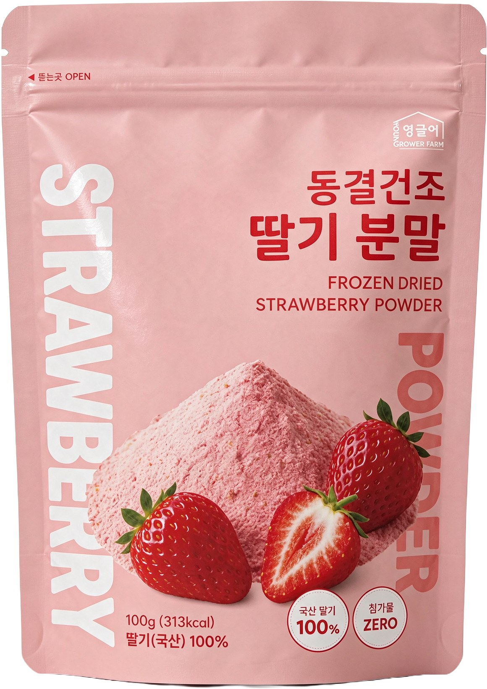
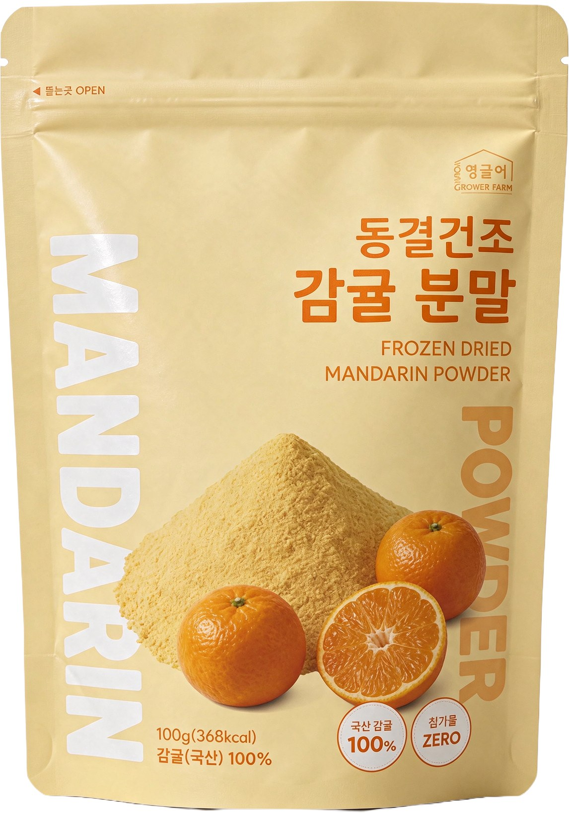

FRUIT POWDERS
Four fruit varieties.
Four fruit varieties.
More ways to use fruit.
The fruit powder range includes blueberry, strawberry, peach and mandarin. The latest packaging is shown below.

Blueberry Powder
Freeze-dried fruit powder

Strawberry Powder
Freeze-dried fruit powder

Peach Powder
Freeze-dried fruit powder

Mandarin Powder
Freeze-dried fruit powder
FOOD APPLICATIONS
Mix, blend or incorporate.
Fruit powders can be introduced into drinks, yogurt and food preparation. Product suitability and the amount used depend on the intended recipe.
- Range
- Blueberry · Strawberry · Peach · Mandarin
- Format
- Fruit powder in resealable pouches
- Product review
- Request the current ingredient list, pack weight, storage instructions and shelf life for each variety.